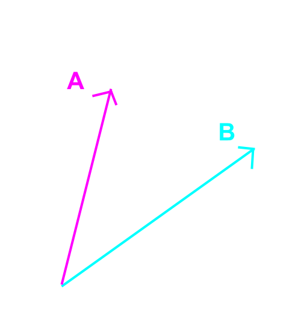

計算幾何
Computational Geometry
eddy1021
課程大綱
- 座標與向量
- 有向面積
- 線段相交
- 誤差分析
何爲計算幾何

座標與向量
表示平面上的幾何圖形
- 長度
- 角度
- 座標
- 向量
實作上表示平面幾何
座標、向量

實作上表示平面幾何
#include <utility> // include pair
//typedef std::pair<int,int> Pt;
typedef std::pair<double,double> Pt;
#define X first
#define Y second
Pt point( double x , double y ){
return make_pair( x , y );
}
int main(){
Pt a = point( 4 , 3 );
printf( "%d %d\n" , a.X , a.Y );
}
向量(數學補充)

內積(Dot):
$A \cdot B = |A| |B| cos \theta $
$A \cdot B = A_x B_x + A_y B_y$
外積(cross):
$A \times B = |A| |B| sin \theta $
$A \times B = A_x B_y - A_y B_x$
向量基本操作
typedef std::pair<double,double> Pt;
#define X first
#define Y second
Pt operator+( const Pt& p1 , const Pt& p2 ){
return Pt( p1.X + p2.X , p1.Y + p2.Y );
}
Pt operator-( const Pt& p1 , const Pt& p2 ){
return Pt( p1.X - p2.X , p1.Y - p2.Y );
}
double operator*( const Pt& p1 , const Pt& p2 ){
return p1.X * p2.X + p1.Y * p2.Y;
}
double operator^( const Pt& p1 , const Pt& p2 ){
return p1.X * p2.Y - p1.Y * p2.X;
}
向量基本操作
Pt operator*( const Pt& p1 , const double& k ){
return Pt( p1.X * k , p1.Y * k );
}
Pt operator/( const Pt& p1 , const double& k ){
return Pt( p1.X / k , p1.Y / k );
}
double abs( const Pt& p1 ){
return sqrt( p1 * p1 );
}
有向面積
兩向量形成三角形
兩向量可夾出三角形
其面積可由外積得出：
$\Delta OAB = \frac{1}{2} \vec{A} \times \vec{B}$
此面積我們稱爲$\textbf{有向面積}$
(外積有正有負)
有向面積的方向

$\vec{AB} \times \vec{AC}$
$=(5,0) \times (3,4)$
$= 5 \times 4 - 0 \times 3$
$=20 > 0$
有向面積的方向

$\vec{AC} \times \vec{AB}$
$=(3,4) \times (5,0)$
$= 3 \times 0 - 4 \times 5$
$= -20 < 0$
多邊形的有向面積

如同三角形
多邊形的有向面積：
$\textbf{ 逆時針爲正}$
$\textbf{ 順時針爲負}$
多邊形的有向面積
任意在平面上選一點 $A$
將所有點與 $A$ 點連線
相鄰兩點將與 $A$ 點形成三角形
依逆時針(或順時針)序依序加總各三角形有向面積
即爲該多邊形之有向面積
多邊形的有向面積
一般而言，會挑選原點作爲參考點
若一個多邊形的頂點依序爲：
$P_0,P_1,\ldots,P_{N-1},P_N=P_0$
則多邊形的有向面積公式爲：
$\text{Area}=\frac{1}{2} \sum\limits_{i=0}^{N-1} \vec{P_i} \times \vec{P_{i+1}}$